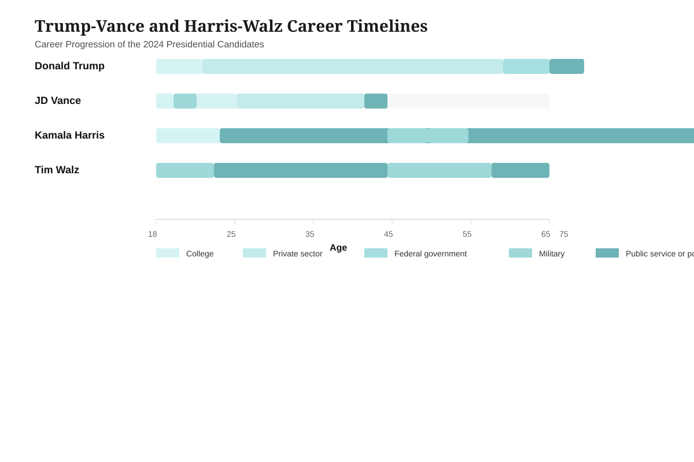

Data Visualization Portfolio
Brody Schram
Portfolio Assignments
-
 About this portfolio: This section features 1 basic scatter plot and 3 systematic variations built from the exact same underlying penguin data.
About this portfolio: This section features 1 basic scatter plot and 3 systematic variations built from the exact same underlying penguin data.What is a culmen? In penguin research, the culmen is the upper ridge of the bill. The lengthwise measurement from the base to the tip along the top of the bill. Comparing culmen length and depth helps reveal differences between species.
Chart 1: Scatter Plot
Description: This plot showcases the relationship between culmen length and depth across different penguin species. Each point represents one penguin observation and is colored by species to highlight clustering patterns.
Variation 1: Smaller & Separate Scatter Plots
Description: This variation uses small graphs moving each species into its own panel while preserving similar scale structure for each species. This allows an easier comparison of within-species patterns without visual clutter.
Variation 2: Swapped Dimensions & Color Encoding
Description: The numeric x-axis is swapped out for the categorical species feature, while culmen length is encoded by color. This arrangement emphasizes species differences and the distribution of depth values within groups.
Variation 3: Bar Chart Aggregation
Description: This bar chart shows the average culmen depth for each penguin species. The bar mark makes direct comparisons easy and highlights the species-level group differences in a simplified, digestible form.
-
Comparing the graphic made by New York Times and my version. If the image does not load on your end, use the article link here: The New York Times article.
Original Visualization
Source: The New York Times (2024)

The New York Times visualization showing the career progression of the 2024 presidential candidates.
Vega-Lite Recreation
Recreation Process: I rebuilt this visualization using Vega-Lite to improve the original design.
Design Decisions: The original visualization is showing how the presidential candidates in 2024 progressed their careers. One of the main design tasks was to capture the age progression while also distinguishing each profession across life stages. The recreation keeps the same horizontal structure and color logic, while simplifying the labels and increasing readability.
- Portfolio 3